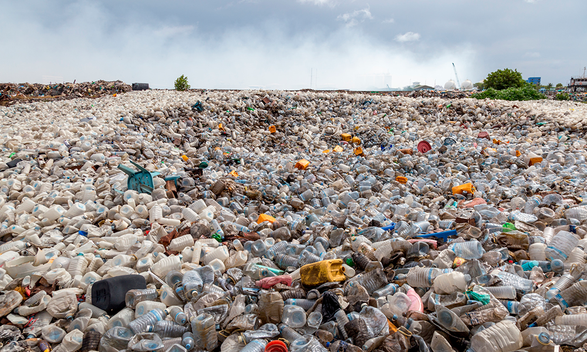
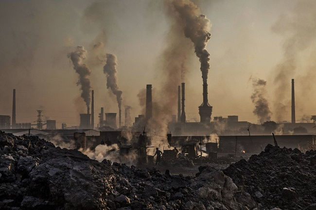
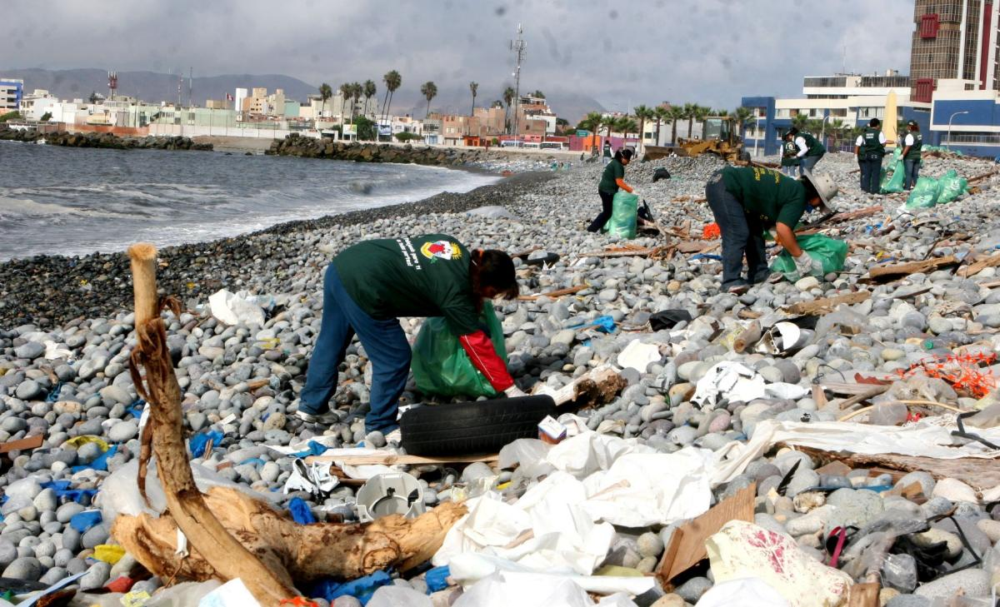

<!DOCTYPE html>
<html lang="english"></html>
<html>
<head>
  <meta charset="utf-8">
  <meta name="viewport" content="width=device-width, user-scalable=no, initial-scale=2.0, maximum-scale=2.0, minimum-scale=2.0">
  <meta http-equiv="X-UA-Compatible" content="ie=edge">
  <link rel="stylesheet" href="https://stackpath.bootstrapcdn.com/bootstrap/4.4.1/css/bootstrap.min.css" integrity="sha384-Vkoo8x4CGsO3+Hhxv8T/Q5PaXtkKtu6ug5TOeNV6gBiFeWPGFN9MuhOf23Q9Ifjh" crossorigin="anonymous"><!--copiado de la página bootstrap-->
  <script src="https://ajax.googleapis.com/ajax/libs/jquery/3.2.1/jquery.min.js"></script>
  <script src="https://maxcdn.bootstrapcdn.com/bootstrap/3.3.7/js/bootstrap.min.js" ></script>
  <script src="https://code.jquery.com/jquery-3.4.1.slim.min.js" integrity="sha384-J6qa4849blE2+poT4WnyKhv5vZF5SrPo0iEjwBvKU7imGFAV0wwj1yYfoRSJoZ+n" crossorigin="anonymous"></script>
  <script src="https://cdn.jsdelivr.net/npm/popper.js@1.16.0/dist/umd/popper.min.js" integrity="sha384-Q6E9RHvbIyZFJoft+2mJbHaEWldlvI9IOYy5n3zV9zzTtmI3UksdQRVvoxMfooAo" crossorigin="anonymous"></script>
  <script src="https://stackpath.bootstrapcdn.com/bootstrap/4.4.1/js/bootstrap.min.js" integrity="sha384-wfSDF2E50Y2D1uUdj0O3uMBJnjuUD4Ih7YwaYd1iqfktj0Uod8GCExl3Og8ifwB6" crossorigin="anonymous"></script>
  <link type="text/css" rel="stylesheet" href="Styles.css" />
  <script> <!--Java-->
    alert("Bienvenido a nuestra web!") 
   </script>

</head>

<body>
   
    
     <nav class="navbar navbar-expand-lg navbar-light bg-light navbar-inverse fixed-top">  
            
            <a class="navbar-brand" href="proyecto-menu.html">OUR ENVIROMENT<!--Nombre de la barra de navegación--> </a>
            <button class="navbar-toggler" type="button" data-toggle="collapse" data-target="#navbarSupportedContent" aria-controls="navbarSupportedContent" aria-expanded="false" aria-label="Toggle navigation">
              <span class="navbar-toggler-icon"></span>
            </button>
                   
            <div class="collapse navbar-collapse" id="navbarSupportedContent">
              <ul class="navbar-nav mr-auto">
                <li class="nav-item active"><!--Cada barra de <li> es una entrada para la barra de navegación-->
                  <a class="nav-link" href="proyecto-menu.html">Home<span class="sr-only">(current)</span></a>
                </li>
                <li class="nav-item active"><!--Cada barra de <li> es una entrada para la barra de navegación-->
                  <a class="nav-link" href="forum.html">Fórum <span class="sr-only">(current)</span></a>
                </li>
                <li class="nav-item active"><!--Cada barra de <li> es una entrada para la barra de navegación-->
                    <a class="nav-link" href="sobrenosotros.html">Sobre nosotros<span class="sr-only">(current)</span></a>
                  </li>
              </ul>      
            </div>
          </nav>


    <div class="jumbotron">
        <p class="ta">OUR ENVIROMENT</p>
        <br>
        <br>
        <p class="ca text-center">Estas son unas de las pocas muestras sibre la situación actual de nuestro planeta</p>


        <div class="row">
          <div class="col-md-4">
            <div class="thumbnail">
              <a href="https://cnnespanol.cnn.com/tag/contaminacion-de-plastico/">
                
                <div class="caption">
                  <p>Contaminación de plástico</p>
                </div>
              </a>
            </div>
          </div>
          <div class="col-md-4">
            <div class="thumbnail">
              <a href="https://elpais.com/tag/contaminacion_atmosferica/a">
                
                <div class="caption">
                  <p>Contaminación atmosférica</p>
                </div>
              </a>
            </div>
          </div>
          <div class="col-md-4">
            <div class="thumbnail">
              <a href="https://elpais.com/tag/contaminacion_maritima/a">
                
                <div class="caption">
                  <p>Contaminación marítima</p>
                </div>
              </a>
            </div>
          </div>
        </div>


    </div>
    
    <marquee>Ayudemos a proteger nuestro planeta!</marquee>

    <div class="row">
        <div class="col-sm-6">
        <h2>Noticias</h2>
        <br>
        <ul>
          <li><a href="https://www.abc.es/economia/abci-economia-circular-y-reto-crecimiento-economico-201912160222_noticia.html">Economía circular y 
        el reto del crecimiento económico</a></li>
          <li><a href="https://elpais.com/sociedad/2019/12/26/actualidad/1577354262_029338.html">Murcia aprueba un decreto ley para recuperar el mar Menor 
        pero admite que no es suficiente</a></li>
          <li><a href="https://elpais.com/sociedad/2019/12/26/actualidad/1577354262_029338.html">El Supremo holandés obliga al Estado a reducir un 25% las
        emisiones en 2020</a></li>
          <li><a href="https://www.abc.es/sociedad/abci-alemania-aumenta-precio-emisiones-201912161807_noticia.html">Alemania aumenta el precio de las emisiones de CO2</a></li>
          <li><a href="https://www.abc.es/espana/madrid/abci-madrid-destinara-100000-euros-plan-reduccion-contaminacion-plaza-eliptica-201912161143_noticia.html">Madrid destinará
        100.000 euros al plan de reducción de la contaminación en Plaza Elíptica</a> </li>
        </ul> 
        </div>
       
        
    
      <div class="col-sm-6">
        <h2>Estilo de vida sostenible</h2>
        <ul>
          <li>Consume sólo lo que necesites.</li>
          <li>Debes ser crítico: infórmate de las consecuencias sociales y ecológicas de la generación de los productos que consumes habitualmente.</li>
          <li>Sustituye los baños por duchas.</li>
          <li>Utiliza productos de limpieza biodegradables o más naturales (por ejemplo, en vez de detergentes desengrasantes, utiliza los desengrasantes naturales, como el limón).</li>
          <li>Utiliza bombillas de bajo consumo.</li>
          <li>No compres y utilices electrodomésticos que superan tus necesidades</li>
          <li>Utiliza el transporte público siempre que puedas.</li>
        </ul>
        </div>
      </div>
    </div>

    </div>


</body